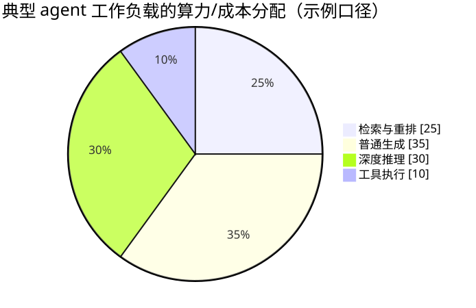

第17章 推理技术 Reasoning Techniques
用提示或训练诱导模型显式展开中间推理，再以采样投票、树搜索与测试时算力分配，把"更多思考"可控地兑换成更高正确率。
一句话定义：让模型在给出答案之前先生成显式的中间推理——用提示引出、用采样与投票去噪、用树搜索扩展、或用训练把思考内化——并以测试时算力分配把"更多思考"兑换成更高正确率。 解决什么问题：模型一步作答时多步错误率是各步错误率的乘积，且算力不随难度变化 ｜ 适用场景：数学与逻辑推理、代码生成与调试、多跳问答、智能体的规划与决策节点 ｜ 核心机制：思维链提示 → 自洽性投票 → 思维树/图搜索 → 过程监督 → 推理模型（内化思维链）｜ 代价：token 成本与延迟随思维链长度线性上涨，长链有走神与错误传播风险，显式推理的解释未必是答案的真实因果。
17.1 模式概述
17.1.1 问题背景：为什么需要这个模式
让语言模型直接回答"袋中有 5 个红球 3 个白球，摸两次都摸到红球的概率"，它经常一步蹦出个错误数字——像极了不做草稿的人在心算。问题有两个来源。其一是误差乘法：一个五步的推理任务，若每步正确率 90%，一步作答的整体正确率只有约 59%；中间步骤不显式化，错误既无法定位也无法纠正。其二是算力错配：一步作答的模式下，"1+1 等于几"与"三位数乘法"消耗同样的计算，简单问题浪费算力，困难问题又算力不足——计算量没有随问题难度伸缩的通道。
推理技术的解法在直觉上平凡、在效果上惊人：让模型先写草稿再交卷。把中间步骤作为文本显式生成出来，每一步的生成都能以先前步骤为条件，模型实际上获得了更多的串行计算；步骤写在纸面上，错误变得可见、可检查、可投票。从 2022 年的思维链提示开始，这条路线逐步升级为完整的谱系——采样投票去噪（自洽性）、树上搜索扩展（思维树）、逐步打分监督（过程奖励）、直至 2024 年后的推理模型把整个思考过程内化到训练目标里。
17.1.2 核心机制：它如何工作
推理技术的机制可以沿"推理在哪里发生"分为三代。第一代：提示引出。在少样本示例里展示"问题→分步推理→答案"的格式（思维链，CoT），或者干脆附加一句"让我们一步一步思考"（零样本思维链），模型就会把答案前的 token 预算花在中间推理上。第二代：采样与搜索。自洽性（Self-Consistency）对同一问题温度采样多条思维链、抽取最终答案做多数投票，用冗余压制单链的随机错误；思维树（ToT）把推理重组为树——每层生成多个候选"想法"、用模型自评或外部校验打分、可回溯地搜索，思维第一次成为可搜索的空间；思维图（GoT）进一步把推理单元组织成任意图，允许合并与聚合。第三代：训练内化。过程监督（逐步打分的奖励模型）与强化学习把"长而正确的思维链"变成训练目标，o1 系列与 DeepSeek-R1 这类推理模型在回答前生成成千上万 token 的内部思考，把"深思"变成了模型的原生行为而非提示技巧。
三代机制共享同一个控制旋钮：测试时算力。同一个问题，可以只推理一次，也可以采样二十次投票，可以搜两层树，也可以让推理模型思考三分钟——推理技术工程化的核心，就是把这个旋钮按问题难度和 SLO 拧到合适的位置。

17.1.3 与相邻模式的关系与组合
推理技术与反思（第 4 章）是同一枚硬币的两面：推理是前向展开（答案产生前的思考），反思是回看修正（答案产生后的审视）；自洽性投票与反思的"再试一次"常串联使用——一致性低就触发反思。思维树本质上是规划（第 6 章）在推理空间的实例：候选分支、评估、回溯，与任务规划的分解评估同构。ReAct 式交错把推理节点嵌进工具调用（第 5 章）循环——观察之后、行动之前插入一个简短的"想法"，这正是智能体循环中最小粒度的推理节点。推理模型选型与路由（第 2 章）和资源感知优化（第 16 章）直接相关：按难度把请求分流到普通模型与推理模型，是 2024 年后级联的新维度。显式思维链的每一步都是异常处理（第 12 章）的检查点素材，而"思考多少步"的预算约束属于目标与监控（第 11 章）。
17.2 源起：它从哪里来
思维链作为方法，始于 2022 年初 Google 的 Wei 等人：一组少样本示例即可让模型写出分步推理再作答，GSM8K 上 PaLM 540B 迈过 50% 门槛。此后沿两条线长粗：去噪——Wang 等人发现推理链可采样投票（自洽性），收益超过任何单链，Kojima 等人证明一句咒语即可引出推理；搜索与监督——思维树给推理装上回溯，OpenAI 证明逐步奖励优于只看终局。2024 年 8 月 Snell 等人把"想多久"变成可计算的分配问题；一个月后 o1 发布，长思维链内化为训练目标；2025 年 1 月 DeepSeek-R1 用纯强化学习开源复现，演化见 17.5。
| 年月 | 事件 | 提出者/机构 | 出处 |
|---|---|---|---|
| 2022-01 | 思维链（CoT）：少样本示例引出显式中间推理 | Wei 等（Google） | arXiv:2201.11903 |
| 2022-03 | 自洽性：多链采样 + 多数投票 | Wang 等（Google） | arXiv:2203.11171 |
| 2023-05 | 过程监督：逐步奖励优于终局奖励 | Lightman 等（OpenAI） | arXiv:2305.20050 |
| 2024-08 | 测试时算力最优分配：小模型可胜约 14 倍大模型 | Snell 等（UC Berkeley） | arXiv:2408.03314 |
| 2024-09 / 2025-01 | o1 发布、DeepSeek-R1 开源：推理模型成为品类 | OpenAI / DeepSeek | 官方发布 / arXiv:2501.12948 |
17.3 发挥的作用：为什么重要
正确率：在多步任务上，推理技术的收益是数量级级的。思维树论文中的经典对比：24 点游戏上，标准思维链的正确率约 4%，搜索式推理推到约 74%——同 一个模型，只是把"怎么想"改成了"想、评、选、退"。自洽性在 GSM8K 上为思维链再添十几个百分点，代价仅仅是多采几条链。这些数字的共同含义是：多步任务的瓶颈常常不是模型不知道，而是模型没算够。
可控性：显式思维链把黑盒生成变成可检查的过程——错误定位到某一步、答案可追溯到依据、过程本身成为评估与审计的对象。对智能体而言，这直接转化为第 12 章的检查点与第 19 章的过程评估素材。
新的扩展轴：预训练规模化的边际收益递减后，测试时计算成为第二条可购买的扩展曲线。Snell 等人的结论给工程上了发条：给定算力预算，"小模型多想"与"大模型少想"之间存在一个可计算的最优点——推理不再只是能力问题，而是与第 16 章同一张账本上的资源分配问题。
17.4 实际应用与案例
- 数学与科学解题：解题智能体先自洽性采样（n=5~10）投票，一致性低于阈值再升级思维树或推理模型。关键设计点：答案抽取要结构化（"答案：X"约定行），投票对象是归一化后的答案而非全文。
- 代码生成与调试：生成阶段让模型先列测试用例再写实现；调试阶段用 ToT 式分支——对每个"最可疑的假设"各开一条排查路径，用单元测试结果（结果监督）剪枝。关键设计点：可执行测试是免费的判分器，优先于模型自评。
- 多跳问答智能体：ReAct 循环里，每次检索后用一句"想法"决定下一步搜什么、还是证据已足可作答，抑制纯检索式系统的"凑答案"倾向。关键设计点：想法限一句话，深度推理只在"检索结果相互矛盾"时触发。
- 数据分析链路：先让模型产出分析计划（分几步、每步算什么），逐步执行并核对中间数字，最后汇总结论。关键设计点：中间步骤的数字要落盘为结构化数据供复核，而不是留在叙事文本里。
- 复杂决策支持：比较方案时用思维树展开"方案 × 风险维度"的评估矩阵，每个节点独立打分再聚合，避免单次生成里利弊混写、首因偏见主导。关键设计点：分支评估提示要求只评本节点，禁止提前下总体结论。
- 智能体的规划节点：任务开始时用思维树做子目标分解与可行性初筛（第 6 章），执行中每个关键决策点附简短 rationale 落入轨迹日志。关键设计点：规划深度的边际收益递减很快，两层树通常够用，把预算留给执行中的反思。
- 推理模型替身：高价值低频任务（合同审查、根因分析）直接换用推理模型，用"思考预算"控制成本；前端展示结论而非原始思维链。关键设计点：按第 2 章路由把这类请求从高 QPS 主链路摘出，延迟可容忍是前提。
真实世界实例
OpenAI o1：推理模型品类的开局成绩单。2024 年 9 月 OpenAI 官方发布给出的对照数据是"测试时算力换正确率"的第一份工业级证据：2024 年 AIME 考试上 GPT-4o 平均只解出约 12%（1.8/15），o1 单次作答 74%，64 样本共识投票 83%，再用学习到的评分函数对 1000 个样本重排后达 93%（13.9/15，跻身全美前 500 名考生之列）；竞赛编程上 o1 在 Codeforces 达到第 89 百分位，GPQA diamond 上首次超过人类博士专家。注意其结构：投票与重排的每一步都是本章技术在模型内外的直接应用。
DeepSeek-R1：开源推理模型的破圈。2025 年 1 月 20 日 DeepSeek 发布并开源（MIT 许可）DeepSeek-R1（论文）：纯强化学习（GRPO）训练使长思维链无过程标注即自发涌现，AIME 2024 达 79.8%（略超 o1-1217）、MATH-500 达 97.3%、Codeforces Elo 2029（超过 96.3% 的人类参赛者）；API 定价每百万输出 token 16 元（约 2.19 美元），约为 o1 同期价格的零头（官方定价）。发布一周内登顶中美 App Store 免费榜，微软 Azure、英伟达 NIM、亚马逊 Bedrock 先后接入——低成本开源把推理模型从稀缺品变成了默认选项。
Kimi k1.5：非 MCTS 路线的工程验证。月之暗面 2025 年 1 月 22 日提交的 Kimi k1.5 技术报告给出一条与 R1 互为印证的 RL 路线：把 RL 上下文扩到 128k、用部分回放（partial rollout）提效，不依赖蒙特卡洛树搜索、值函数与过程奖励模型，长 CoT 版在 AIME 77.5、MATH 500 96.2、Codeforces 第 94 百分位上达到 o1 水平；其 long2short 方法（长度惩罚 + 模型合并）把长链推理的先验迁移回短链模型，直接回答了"测试时算力账单怎么压"。
17.5 深度讲解
17.5.1 系统 1 / 系统 2 类比与它的边界
卡尼曼把人类认知分为系统 1（快速、自动、直觉）与系统 2（缓慢、费力、审慎），这个类比精确地描摹了推理技术的位置：一步作答是系统 1——从问题直接跳到答案；显式思维链是系统 2 的替身——用串行的语言生成模拟"把工作记忆摊在纸上算"。类比很好用，但有两条边界必须刻在心里。第一条：模型的"深思"仍是 next-token prediction。思维链不是在另一个计算模式里运行，它只是把计算摊开成更多 token——收益真实存在（串行计算的叠加），但机制与人类慎思不同，因此思维链会犯人类慎思不会犯的错：中间步骤写对了、答案却抄错；或前一步的小错在链上滚成雪球。第二条：解释未必是原因。思维链读起来像推理，但研究反复提示它可能是事后合理化——改变提示里的暗示因素，模型会为同一个（被暗示的）答案写出截然不同的"推理"。工程含义有二：其一，思维链的可解释性价值是"可检查"而非"必真诚"，审计高风险决策不能只看它写的理由；其二，过程监督之所以有效，部分原因正是逐步打分比只看终局更难被表面合理化骗过。
17.5.2 结果监督与过程监督
给推理上监督有两条路。结果监督（ORM）只看终局：答案对就整链奖励——便宜、可自动化（有标准答案或单元测试的领域几乎免费），但稀疏：一条二十步的链只在最后拿到一个比特的信号，而且"蒙对答案的错误链"同样被奖励，模型学到的可能是运气而非推理。过程监督（PRM）逐步打分：OpenAI 的"Let's Verify Step by Step"在 MATH 基准上证明，逐步奖励模型对最终正确率的提升显著优于同规模的结果奖励模型，并公开了 80 万步级标注的 PRM800K 数据集。过程信号密、能精确惩罚"第一步就歪"的链，代价是标注昂贵——人工逐步打分的成本远高于只判对错。工程上的折中表：数学这类有标准答案的域，用结果监督筛链 + 投票足够；代码域用单元测试当准过程监督（每个测试通过与否都是中间信号）；开放域没有免费判分器，要么投人审（第 13 章），要么用强模型做裁判模型——但裁判自身的偏差要被评估（第 19 章）盯住。
"显著优于"不止是定性结论，这篇论文给的是同题同模型的硬数字：在 MATH 测试集的代表性子集上做 Best-of-N 重排，过程监督的 PRM 解出 78.2%，结果监督的 ORM 只有 72.4%，而多数投票基线更低至 69.6%（arXiv:2305.20050）；且随采样数 N 增大，PRM 的领先持续扩大——更好的验证器能从更大的候选池里挖出更多价值。过程监督标注贵的软肋也有一条工程解法：论文用主动学习把"看起来有说服力但答错"的解法优先送人标，数据效率约为均匀标注的 2.6 倍，公开的 PRM800K（80 万步级人工标注）即由此而来。工程者可以把 2.6 倍读成一条预算换算：预算不变时，花在"挑哪些链给人看"上的采样成本，能换来近三倍的步级监督数据。
17.5.3 测试时扩展律与算力最优分配
"多想更准"不是无限线性、而是边际收益递减的曲线：同一问题采样第 2 条链的期望增益远高于第 40 条；树搜索加一层深度的收益随深度递减；推理模型把思考 token 从一千涨到一万，正确率曲线先陡后平。Snell 等人 2024 年的论文把这幅图定量化了，并给出两个工程级结论。其一，算力应按难度分配：简单问题少量采样即收敛，过度思考反而可能把正确答案"投"没了；困难问题值得多采样、深搜索——固定预算下按难度优化分配，一个明显更小的模型可以胜过大约 14 倍大的模型。其二，难度要先估：分配的前提是知道谁难谁易，实践中用轻量信号（自洽性一致性、第一次尝试的正确性、任务元数据）做难度路由，这本质上是第 2 章的路由问题在"思考深度"维度的重演。把三件事连起来——难度估计、按难度给预算、预算内选最优技术（投票 vs 搜索 vs 推理模型）——就是推理技术的调度层，也是它从论文变成生产组件的最后一公里。
两个常被读丢的定量细节值得补进工程判断。其一，"按难度分配"不是一句正确的口号，它有价签：Snell 等人的论文里，compute-optimal 策略相对最优 best-of-N 基线把测试时算力的扩展效率提升超过 4 倍（arXiv:2408.03314）——同样的正确率，四分之一的算力就够。其二，"小模型胜 14 倍大模型"有明确的适用边界：实验前提是该问题对小模型具有非平凡的成功率——小模型必须"偶尔答对"，测试时算力才能把概率质量集中到正确答案上；对小模型完全不咬合的任务（专有领域长尾、特殊输出格式），多采样只会把预算烧成一致错误的投票，这条路线失效，只能换模型。回看 17.2 的演化线，其主线是推理从提示技巧升格为训练目标：第一代靠示例与咒语"求"模型思考，第二代在输出分布上做统计与搜索的工程，第三代直接把"生成正确思维链"写进损失函数；与此同时，"何时推理、推理多久"从研究员的兴趣变成工程师的调度问题——这正是本章与第 16 章交接的地方。

17.5.4 推理模型与普通模型的选型
o1 系列与 DeepSeek-R1 一类推理模型把长思维链内化后，选型问题浮出水面：什么时候该付"思考税"？该用的场景：多步数学与逻辑、算法级代码、复杂调试、智能体的规划与根因分析——特征是"步骤多、单步难、答错贵"，且延迟可容忍（推理模型的思考常以十秒计）。不该用的场景同样明确。分类、抽取、格式转换、简单改写这类任务，普通模型一步到位且更稳，推理模型不仅慢一个数量级、贵若干倍，还可能"过度思考"——把简单问题绕进复杂的自我怀疑，反而增加出错面。高 QPS 主链路要把延迟与成本算进 SLO，默认不用推理模型，困难请求经路由升级（第 2 章、第 16 章）。两个选型纪律：其一，用自家难任务集做升级判据，通用基准的"更强"未必落在你的长尾上；其二，注意推理 token 的计费口径——推理模型的思维链往往不返回原文（或只返回摘要），但 token 照常计费，成本核算必须读 usage 而不是估算输出长度。
再补一个反直觉的证据："更会思考"不等于"处处更好"。Apple 的《The Illusion of Thinking》（arXiv:2506.06941）用可控谜题环境系统对比标准 LLM 与大型推理模型（LRM），发现任务复杂度存在三个区间：低复杂度任务上标准模型反而优于推理模型，中等复杂度才是推理模型的优势区，高复杂度上两者同时崩溃；且推理模型的"思考投入"随复杂度先升后降——token 预算没用完，模型就放弃了思考。这为"按难度分配"补上了反面：难度低时，多想不仅更贵更慢，还可能想错（把简单问题绕进复杂的自我怀疑）。"何时开推理"可以落成一张判据表：
| 信号 | 用普通模型一步作答 | 开推理（投票 / 树 / 推理模型） |
|---|---|---|
| 步骤数 | ≤2 步、无中间依赖 | 多步依赖，中间结论相互影响 |
| 校验 | 有廉价外部校验（正则 / 查表 / 单元测试） | 无免费判分器，需投票或模型自评 |
| 延迟 SLO | P95 秒级以内 | 可容忍十秒级思考 |
| 答错代价 | 低（可重试、可快速人工纠正） | 高（不可逆动作、高价值决策） |
判据满足左列三项以上就用普通模型——推理是稀缺资源，默认关闭，按难度显式打开。
17.5.5 推理节点在智能体循环中的位置
智能体的"思考"不是一团整体，而是分布在不同位置、不同深度的推理节点。循环前：规划节点（第 6 章）做任务分解，此处值得用较深的推理（思维树或推理模型），因为一次规划的收益覆盖整个任务。循环中：ReAct 式的"想法"节点——观察之后、行动之前，一句话回答"现在该做什么、为什么"；这个节点必须轻，一句话的 rationale 足以维持计划感与可追溯性，长篇大论只会稀释上下文并烧 token。失败时：反思节点（第 4 章）做归因与改道，深度可以高于循环中的想法——它低频且高价值。提交前：对不可逆动作（付款、删除、外发），在执行前插入一个校验推理节点，重列将要发生的副作用——这是把系统 2 强制插在系统 1 的手已经抬起来的时刻。设计原则总结为一条：推理深度与决策不可逆性、失败代价成正比，与触发频率成反比。高频节点保持轻，低频关口保持重，整体才既准又省。
17.5.6 显式思维链的成本与失效模式
思维链的账单有三笔：token 成本随链长线性上涨；延迟随生成串行累积；上下文占用随轨迹增长反过来挤压后续步骤。失效模式沿链展开。错误传播：一步走偏，后续步骤以它为前提，链越长纠偏越难——ReAct 论文对比纯思维链时就指出，无外部反馈的长链幻觉会沿过程累积；对策是缩短单链、引入外部检查点（工具结果、单元测试）、或用自洽性投票对冲单链方差。走神与失焦：长链生成中模型可能重复绕圈、自相矛盾、忘记初始约束——链不是越长越好，步数上限（第 11 章的预算）与"已确定的进展"显式回填（如 17.6.1 的 progress 变量）都是直接解法。过程泄漏：内部草稿混进用户可见输出，暴露语气失控的中间状态甚至敏感上下文——思维链要与最终答案分通道存放，返回给用户前剥离开。多样性坍缩：温度采样不足时五条链长得一样，投票变成伪冗余——检查投票分布的唯一性就知道采样是否真的多样。何时可以不用：答案可一步给出、且有廉价外部校验（如正则、查表）兜底的任务，直接作答加校验比展开推理更便宜也更稳。
17.5.7 怎么用：运用判断
适用信号——出现以下特征时值得引入本章技术：任务可分解为多个相互依赖的步骤（数学推导、多跳问答、算法级代码、根因分析）；一步作答在你的自有评测集上失败率不可接受，且存在某种判分信号（标准答案、单元测试、格式校验）可自动验收；延迟与成本预算允许为"困难请求"支付数倍 token；或一致性、投票分布本身是你要的可观测信号。
与最相近方案（直接换更大/推理模型）对比：
| 维度 | 测试时推理（本章） | 直接换更强 / 推理模型 |
|---|---|---|
| 成本分布 | 按难度付钱：简单请求免费，难请求付思考税 | 全量请求承担高价与高延迟 |
| 可控性 | 预算旋钮在手（采样数、树深、思考上限） | 定价与延迟由供应商决定 |
| 收益上限 | 受"小模型非平凡成功率"前提约束 | 难度上限更高，适合全新难题 |
| 工程现实 | 与换模型互补：先投票，一致性低再升级 | 高价值低频任务的最短路径 |
落地三步：第一步，结构化抽取——在提示里约定"最后一行以'答案：X'结尾"，让答案能从思维链中机械剥离，投票对象是归一化后的答案而非全文；第二步，在 20~50 道自家难题上跑"一步作答 vs 自洽性 n=5"对照，记录正确率差与成本差，用数据决定值不值（对照 17.5.4 的判据表）；第三步，把一致性做成升级信号——一致率 ≥0.6 采纳投票结果，低一致性升级思维树或推理模型，并给每个思维节点设 token 与步数上限防走神（呼应第 11 章的预算）。
17.6 工程落地：核心源码与讲解
17.6.1 框架无关实现（片段式）
以下四个片段按原文件顺序排列，按序拼接即完整可运行程序（Python 3.10+，含错误路径与演示入口）。它实现本章两大经典技术：自洽性多数投票（一致性指标同时是升级信号）与简化版思维树（每层两候选、贪心下钻、失败路径降级为继续推进）。
片段 1／4：客户端与采样基座
"""第17章 推理技术：Self-Consistency 多数投票 + 简化版 Tree of Thoughts。"""
from __future__ import annotations
import json
import os
import re
from collections import Counter
from openai import OpenAI
client = OpenAI(base_url=os.environ.get("AGENT_LLM_BASE_URL", "https://api.openai.com/v1"),
api_key=os.environ["AGENT_LLM_API_KEY"])
MODEL = os.environ.get("AGENT_LLM_MODEL", "gpt-4o-mini")
def llm(prompt: str, system: str = "", temperature: float = 0.3,
model: str | None = None) -> str:
"""调用大模型，返回补全文本。"""
messages: list[dict[str, str]] = []
if system:
messages.append({"role": "system", "content": system})
messages.append({"role": "user", "content": prompt})
resp = client.chat.completions.create(
model=model or MODEL, messages=messages, temperature=temperature)
return resp.choices[0].message.content or ""
▸ 代码怎么读：这一段是"能让思考被采样"的基座。注意
llm的默认温度是 0.3，但本程序所有推理调用都显式传更高的温度（0.7）——自洽性与候选生成的价值来自多样性，用默认低温跑 n=5 等于把一条思维链抄五遍，投票变成伪冗余（17.5.6 的"多样性坍缩"）。读者适配时唯一要确认的是环境变量；若走推理模型，请把温度设为供应商推荐的值（部分推理模型固定为 1.0，不可调）。
片段 2／4：自洽性多数投票
COT_SYSTEM = ("你是一丝不苟的解题者。请一步步推理，最后一行以'答案：X'的格式"
"给出最终答案，X 尽量简短（如 5/14）。")
def extract_answer(text: str) -> str:
"""从思维链末尾抽取'答案：X'；抽取失败返回空串（调用方按无效票处理）。"""
matches = re.findall(r"答案[:：]\s*(.+)", text)
return matches[-1].strip() if matches else ""
def self_consistency(question: str, n: int = 5,
temperature: float = 0.7) -> tuple[str, float, Counter]:
"""采样 n 条思维链并投票，返回 (最佳答案, 一致性, 投票分布)。"""
votes: list[str] = []
for _ in range(n):
try:
votes.append(extract_answer(llm(question, COT_SYSTEM, temperature)))
except Exception as exc: # 单条采样失败只弃该票，不中断投票
print(f" [采样失败，弃一票] {type(exc).__name__}: {exc}")
votes = [v for v in votes if v] # 未按格式作答的无效票不计入
if not votes:
return ("", 0.0, Counter())
counter = Counter(votes)
best, count = counter.most_common(1)[0]
return (best, count / len(votes), counter)
▸ 代码怎么读：三个细节决定这段投票是真冗余还是伪冗余。其一，提示里约定"最后一行以'答案：X'"、抽取时取
matches[-1]——取最后一个匹配是防模型中途写多个"答案"字样，协议（提示约定）与解析器（正则）必须成对设计。其二，投票对象是抽取后的答案而非全文：五条全文各不相同，五条答案却可能一样，投全文永远得不到多数。其三，失败路径三条各自有归宿——单条异常弃票不中断、空串无效票被过滤、全部失败返回零一致性；返回的agreement不只是质量分，它就是 17.5.3 说的升级触发信号（低于 0.6 升级更强推理）。n=5是工程起点：收益最大的前几条链，五条通常已能拿到自洽性收益的大半。
片段 3／4：ToT 候选生成与防御式解析
TOT_STEP_SYSTEM = (
"你在协助求解一个多步问题。根据问题与当前进展，提出 {breadth} 个不同的下一步思路，"
"并为每个思路给 0 到 10 的可行性评分。只输出 JSON 数组，格式："
'[{{"thought": "思路描述", "score": 8}}]'
)
def _parse_candidates(raw: str, breadth: int) -> list[dict]:
"""解析候选数组；解析失败返回空列表（调用方降级为保持进展继续）。"""
match = re.search(r"\[.*\]", raw, re.S)
if not match:
return []
try:
data = json.loads(match.group(0))
except json.JSONDecodeError:
return []
return [{"thought": str(it["thought"]), "score": float(it.get("score", 0.0))}
for it in data[:breadth] if isinstance(it, dict) and "thought" in it]
▸ 代码怎么读：ToT 的每一步都要求模型输出结构化 JSON，而"模型没按格式输出"是常态而非异常——所以这段解析是防御式写法的样板：
re.S让.匹配换行（模型常在 JSON 前后寒暄）、截取第一个[…]块再做json.loads、解析失败与缺thought字段都归一为空列表，把"是否降级"的决定权交给调用方。{breadth}双写成{{breadth}}是因为模板要过str.format，JSON 花括号必须转义——这是 prompt 模板化最常见的坑。score用float(it.get(..., 0.0))兜底：模型漏打分时按最低分处理，宁丢一票不崩一层。
片段 4／4：贪心下钻与演示入口
def tot_answer(question: str, depth: int = 2,
breadth: int = 2) -> tuple[str, list[str]]:
"""简化 ToT：每层展开 breadth 个候选、贪心选最高分下钻，depth 层后终答。"""
progress, trace = "（尚未开始）", []
for step in range(depth):
prompt = (f"问题：{question}\n当前进展：{progress}\n"
f"请提出下一步的 {breadth} 个候选思路并评分。")
raw = llm(prompt, TOT_STEP_SYSTEM.format(breadth=breadth), temperature=0.7)
candidates = _parse_candidates(raw, breadth)
if not candidates: # 失败路径：解析失败不中断，保持既有进展继续
trace.append(f"第{step + 1}层：候选解析失败，保持进展继续")
continue
best = max(candidates, key=lambda c: c["score"])
trace.append(f"第{step + 1}层候选：{candidates}；选中：{best['thought']}")
progress = f"{progress} -> 第{step + 1}步：{best['thought']}"
return llm(
f"问题：{question}\n已确定的思路链：{progress}\n"
"请沿这条思路完成求解，最后一行以'答案：X'结尾。",
COT_SYSTEM, temperature=0.2), trace
if __name__ == "__main__":
answer, agreement, counter = self_consistency(
"袋中有红球 5 个、白球 3 个，不放回摸两次，两次都是红球的概率是多少？请用最简分数回答。")
print(f"[Self-Consistency] 投票分布：{dict(counter)}；最佳：{answer}（一致性 {agreement:.0%}）")
final, trace = tot_answer("把 7 棵树栽成 6 行，每行恰好 3 棵，给出栽种布局的思路。")
print("\n".join(f"[ToT] {line}" for line in trace))
print(f"[ToT] 最终回答：{final[:120]}…")
▸ 代码怎么读：这是贪心 DFS 形态的"在思维上搜索"。两个设计值得盯住：其一，
progress把已确定的思路链回填进下一层提示——模型每层都看得见全局进展，这是防长链"走神"的显式机制（对应 17.5.6）；其二，搜索（高温 0.7 提候选）与终答（低温 0.2 走链）分两次调用、两种温度——搜索负责发散找路，终答负责收敛把路走稳。depth=2不是偷懒：规划深度的边际收益递减很快，两层树通常够用，把预算留给执行中的反思（17.4 案例同款纪律）。trace全程记录每层候选与选中项，正是第 19 章过程评估要的轨迹素材；生产化时把
17.6.2 框架差异速览（LangGraph）
LangGraph（示例基于 0.2.x 的 StateGraph API 与 langchain-openai）把自洽性表达为"采样—判停—汇总"的状态图，与 17.6.1 的对应关系如下：
| 17.6.1 中的能力 | LangGraph 对应 | 一句话差异 |
|---|---|---|
| 采样 n 条思维链 | generate 节点每次产一票，条件边回环自身 | 循环从 for 变成图的条件边 |
| 判停（攒够 N 票） | 条件边函数返回 "generate" / "aggregate" |
判停逻辑与图结构显式分离 |
| 选票归并 | votes: Annotated[list[str], operator.add] |
各节点追加由框架按 reducer 自动合并 |
| 多数投票汇总 | aggregate 节点读全量状态 | 汇总节点天然拿到全部选票，算一致性 |
| 并发采样 | 图并行展开多个 generate 分支 | 框架调度并发，代码只写"投一票"的逻辑 |
17.6.3 生产化改造清单
- 错误处理：采样失败弃票不中断；答案抽取失败按无效票计；投票全空时降级为单链直答并打标。
- 超时与预算：每个思维节点设 token 与时长上限（防走神循环）；自洽性总预算 = n × 单链上限，超预算提前判停。
- 并发：自洽性的 n 条采样天然并行（第 3 章），生产用并发采样把延迟从 n 倍压回 1 倍；注意 API 限流配额。
- 缓存：相同问题的投票结果可整包缓存；推理模型的思维链不可缓存原文（供应商不返回），只缓存最终答案。
- 可观测：记录投票分布、一致性、树搜索的分支评分轨迹；一致性分布漂移是模型或流量变化的早期信号。
- 成本控制：按难度路由思考预算（一致性高→降档，低→升级推理模型）；推理模型读取 usage 计费而非估算。
- 评估：用带标注的题目集定期回归各推理档位的正确率与成本，升级判据随模型换代重新校准。
17.7 概览 / 核心要点 / 结论
17.7.1 本章小结
推理技术把"更多思考"变成了可购买的正确率：思维链用提示把中间步骤摊上纸面，自洽性用采样投票对冲单链方差，思维树与思维图把推理变成可搜索、可回溯的空间，过程监督纠正了"只看终局"的奖励偏差，推理模型则把长思维链内化为训练目标、让"深思"成为原生行为。这条演化线的同时，测试时算力的定量规律（Snell 等人）把推理从能力问题改写成调度问题：按难度分配思考预算，简单请求别过度思考，困难请求别吝啬算力。工程落地的三大纪律由此而来——推理深度与不可逆性成正比、与频率成反比；一致性是免费的升级信号；思维链要与最终答案分通道，过程可检查但未必真诚。
17.7.2 核心要点
- 多步任务一步作答的误差是各步误差的乘积；显式思维链用串行 token 换取逐步计算与可检查性。
- 自洽性投票是最廉价的质量放大器：几条链 + 多数投票，一致性同时是升级触发信号。
- 思维树的本质是"在思维上搜索"：候选生成、独立评估、回溯剪枝；深度收益递减，两层常够用。
- 过程监督优于结果监督（逐步打分 vs 只看终局）；工程上优先用免费的中间判分器（单元测试、格式校验）。
- 测试时算力按难度分配：固定预算下优化分配，小模型可胜约 14 倍大模型；难度估计用一致性等轻量信号。
- 推理模型不是默认选项：分类、抽取、高 QPS 主链路用普通模型，多步高价值任务再付"思考税"，成本按 usage 计。
- 智能体循环中推理节点分级：规划重、行间想法轻、失败反思中、不可逆动作前强制校验。
- 显式思维链有失真风险：解释可能是事后合理化，高风险审计不能只读它写的理由。
17.7.3 结论
推理技术的真正贡献，是打破了"模型能力=训练时投入"的单一等式：同一个模型，让它想、多想、按需想，表现可以差出一个数量级。这让工程者第一次拥有了模型权重之外的杠杆——思考本身成为可调度、可计价、可优化的资源。而杠杆的另一端挂着代价：每一分"想得更多"都要用 token、延迟与复杂度来付账。用好的姿势与第 16 章一脉相承：账本上记下每次思考的成本，SLO 里写明质量的底线，然后让难度决定谁值得深思。
17.8 延伸阅读与参考链接
论文
- Wei 等. Chain-of-Thought Prompting Elicits Reasoning in Large Language Models（2022）：思维链。arXiv:2201.11903
- Wang 等. Self-Consistency Improves Chain of Thought Reasoning（2022）：采样投票。arXiv:2203.11171
- Yao 等. ReAct: Synergizing Reasoning and Acting（2022）：思维进入智能体循环。arXiv:2210.03629
- Yao 等. Tree of Thoughts（2023）：在思维上搜索。arXiv:2305.10601
- Lightman 等. Let's Verify Step by Step（2023）：过程监督与 PRM800K。arXiv:2305.20050
- Snell 等. Scaling LLM Test-Time Compute Optimally（2024）：测试时算力的定量标尺。arXiv:2408.03314
- DeepSeek-R1: Incentivizing Reasoning Capability in LLMs via Reinforcement Learning（2025）。arXiv:2501.12948
- Kimi Team. Kimi k1.5: Scaling Reinforcement Learning with LLMs（2025）。arXiv:2501.12599
官方文档与规范
- OpenAI o1 发布页：AIME / Codeforces / GPQA 成绩与"训练时、测试时算力双扩展"曲线的官方出处。
- DeepSeek API 文档与定价：R1 各版本 token 计价与缓存命中折扣。
- LangGraph 官方文档：StateGraph、条件边与循环的参考实现。
案例来源
- GitHub Copilot 多模型选择器（2024-10）：Universe 2024 官方公告——o1-preview / o1-mini 进入 Copilot Chat 的推理档位。
- Cursor Router（2026-07）：官方 changelog——按请求把困难任务路由给前沿推理模型。
- OpenAI o1-preview 发布页：Introducing OpenAI o1-preview——推理模型安全性与限速的官方说明。